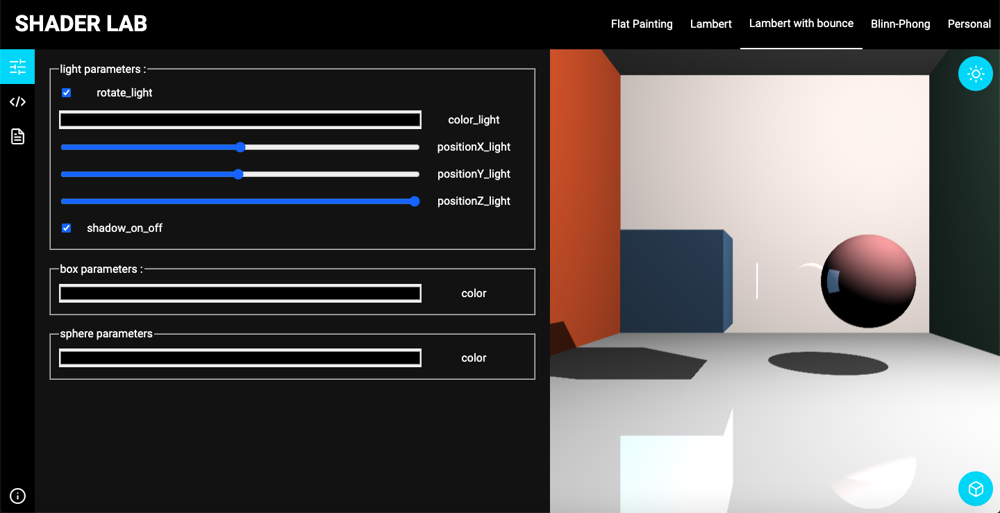
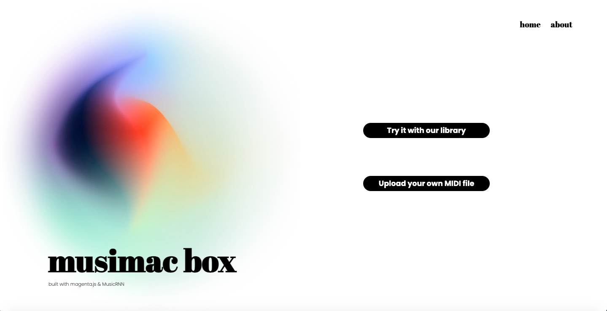
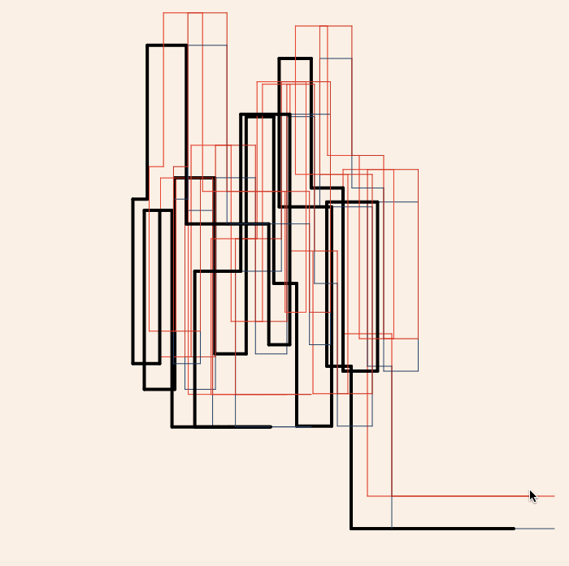

louise.delrieu25@gmail.com
Louise Delrieu
Etudiante ingénieur multimedia
Programmation
Web
Audiovisuel
Shader Lab

Site web permettant de découvrir et de tester différent modèle d'illumination par raymarching.
langages utilisés : Javascript, html, sass, glsl.
Bubble Run
Jeu vidéo inspiré de temple run.
langages utilisés : C++, glsl.
Musimac Box

Site web utilisant une IA pour compléter des morceaux de musique.
langages utilisés : Javascript, html, css.
Recoding Project

C'est un programme inspiré d'une oeuvre de Frieder Nake qui dessine différents rectangles en fonction de où se
trouve la souris.
langages utilisés : p5 (Javascript librairie).
Visuterrimac
C'est un programme qui construit un terrain à partir d'une image en niveau de gris.
langages utilisés : C.